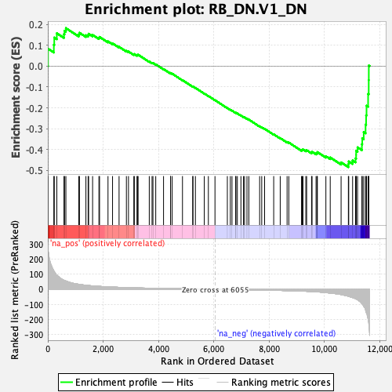
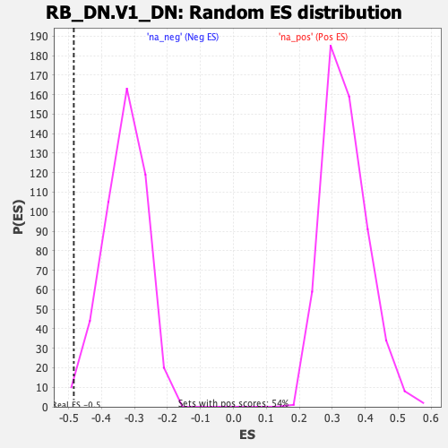

| | | Dataset | DE_genes |
| Phenotype | NoPhenotypeAvailable |
| Upregulated in class | na_neg |
| GeneSet | RB_DN.V1_DN |
| Enrichment Score (ES) | -0.48426664 |
| Normalized Enrichment Score (NES) | -1.4669794 |
| Nominal p-value | 0.010845987 |
| FDR q-value | 0.18534549 |
| FWER p-Value | 0.765 |
Table: GSEA Results Summary

Fig 1: Enrichment plot: RB_DN.V1_DN
Profile of the Running ES Score & Positions of GeneSet Members on the Rank Ordered List
| SYMBOL | RANK IN GENE LIST | RANK METRIC SCORE | RUNNING ES | CORE ENRICHMENT | | 1 | F2RL1 | 7 | 275.807 | 0.0832 | No |
| 2 | TNC | 218 | 121.992 | 0.1021 | No |
| 3 | CD44 | 233 | 117.523 | 0.1366 | No |
| 4 | CREB3L2 | 325 | 94.088 | 0.1573 | No |
| 5 | PRKAR1A | 584 | 59.994 | 0.1532 | No |
| 6 | LGALS9 | 603 | 58.348 | 0.1694 | No |
| 7 | SMIM3 | 653 | 55.206 | 0.1819 | No |
| 8 | HS3ST1 | 1118 | 33.306 | 0.1519 | No |
| 9 | MYADM | 1144 | 32.727 | 0.1597 | No |
| 10 | GJB2 | 1377 | 27.167 | 0.1478 | No |
| 11 | LAMB3 | 1457 | 25.419 | 0.1487 | No |
| 12 | TMCC3 | 1475 | 25.172 | 0.1549 | No |
| 13 | ADAM12 | 1619 | 22.927 | 0.1495 | No |
| 14 | NDRG1 | 1848 | 19.583 | 0.1357 | No |
| 15 | MICAL2 | 1870 | 19.304 | 0.1397 | No |
| 16 | MOXD1 | 2176 | 16.210 | 0.1182 | No |
| 17 | MMP9 | 2340 | 14.879 | 0.1087 | No |
| 18 | DDIT4 | 2576 | 13.098 | 0.0923 | No |
| 19 | PDGFB | 2841 | 11.421 | 0.0729 | No |
| 20 | MVP | 2916 | 10.840 | 0.0698 | No |
| 21 | MMP13 | 3110 | 9.788 | 0.0561 | No |
| 22 | IRX4 | 3128 | 9.701 | 0.0575 | No |
| 23 | PSMB10 | 3225 | 9.314 | 0.0521 | No |
| 24 | FEZ2 | 3240 | 9.230 | 0.0536 | No |
| 25 | SH3BP5L | 3264 | 9.113 | 0.0544 | No |
| 26 | UNC119B | 3668 | 7.481 | 0.0218 | No |
| 27 | DDIT3 | 3769 | 7.091 | 0.0153 | No |
| 28 | LAMTOR3 | 3801 | 6.989 | 0.0147 | No |
| 29 | CTSC | 3902 | 6.675 | 0.0081 | No |
| 30 | BST2 | 4184 | 5.818 | -0.0144 | No |
| 31 | TLL1 | 4436 | 5.151 | -0.0346 | No |
| 32 | FHL1 | 4437 | 5.149 | -0.0330 | No |
| 33 | FAM102A | 4493 | 5.014 | -0.0363 | No |
| 34 | CYTH1 | 4869 | 4.130 | -0.0675 | No |
| 35 | ANKFY1 | 5240 | 3.408 | -0.0985 | No |
| 36 | CISH | 5247 | 3.391 | -0.0980 | No |
| 37 | ARL1 | 5336 | 3.234 | -0.1046 | No |
| 38 | STARD3NL | 5657 | 2.702 | -0.1315 | No |
| 39 | TMEM140 | 5805 | 2.506 | -0.1435 | No |
| 40 | CAP1 | 6044 | 2.195 | -0.1634 | No |
| 41 | EIF4E | 6491 | -2.855 | -0.2012 | No |
| 42 | C18orf32 | 6599 | -3.055 | -0.2095 | No |
| 43 | GOSR2 | 6659 | -3.159 | -0.2136 | No |
| 44 | UROS | 6791 | -3.363 | -0.2240 | No |
| 45 | ANXA6 | 6802 | -3.382 | -0.2238 | No |
| 46 | NFIL3 | 6853 | -3.483 | -0.2271 | No |
| 47 | NEDD9 | 6982 | -3.714 | -0.2370 | No |
| 48 | UBA5 | 7074 | -3.870 | -0.2437 | No |
| 49 | P4HA1 | 7112 | -3.937 | -0.2457 | No |
| 50 | RB1 | 7200 | -4.091 | -0.2520 | No |
| 51 | HSPA5 | 7268 | -4.215 | -0.2565 | No |
| 52 | LRRC4 | 7659 | -5.148 | -0.2887 | No |
| 53 | S100A16 | 7734 | -5.336 | -0.2935 | No |
| 54 | CDC42SE2 | 7838 | -5.636 | -0.3007 | No |
| 55 | PMVK | 8167 | -6.697 | -0.3271 | No |
| 56 | RPS2 | 8403 | -7.482 | -0.3452 | No |
| 57 | BCCIP | 8651 | -8.647 | -0.3639 | No |
| 58 | CAV1 | 8714 | -8.920 | -0.3666 | No |
| 59 | ANXA11 | 9173 | -11.824 | -0.4026 | No |
| 60 | SLC7A5 | 9197 | -11.966 | -0.4010 | No |
| 61 | CDIPT | 9226 | -12.155 | -0.3997 | No |
| 62 | EFL1 | 9329 | -12.865 | -0.4047 | No |
| 63 | FURIN | 9358 | -13.107 | -0.4031 | No |
| 64 | USP18 | 9536 | -14.505 | -0.4140 | No |
| 65 | SQLE | 9554 | -14.723 | -0.4110 | No |
| 66 | NOCT | 9698 | -16.249 | -0.4185 | No |
| 67 | MYORG | 9735 | -16.741 | -0.4165 | No |
| 68 | TMEM42 | 9746 | -16.914 | -0.4122 | No |
| 69 | ACKR3 | 10054 | -21.649 | -0.4322 | No |
| 70 | ANKRD40 | 10211 | -24.859 | -0.4382 | No |
| 71 | MSMO1 | 10604 | -34.611 | -0.4616 | No |
| 72 | SARAF | 10867 | -46.122 | -0.4703 | Yes |
| 73 | AGRN | 10880 | -46.951 | -0.4570 | Yes |
| 74 | NSDHL | 11020 | -54.749 | -0.4524 | Yes |
| 75 | H2BC4 | 11126 | -61.836 | -0.4427 | Yes |
| 76 | CTNNAL1 | 11147 | -63.356 | -0.4252 | Yes |
| 77 | DUSP14 | 11148 | -63.708 | -0.4058 | Yes |
| 78 | STC2 | 11199 | -67.643 | -0.3896 | Yes |
| 79 | BNC1 | 11356 | -94.121 | -0.3745 | Yes |
| 80 | WNT3 | 11369 | -96.634 | -0.3462 | Yes |
| 81 | PPP2R1B | 11422 | -111.882 | -0.3167 | Yes |
| 82 | CELSR1 | 11489 | -138.408 | -0.2803 | Yes |
| 83 | TUBA4A | 11509 | -150.754 | -0.2362 | Yes |
| 84 | ADAMTS1 | 11524 | -156.434 | -0.1898 | Yes |
| 85 | DKK3 | 11581 | -201.149 | -0.1336 | Yes |
| 86 | CD9 | 11603 | -223.619 | -0.0674 | Yes |
| 87 | ATF5 | 11606 | -230.968 | 0.0026 | Yes |
Table: GSEA details [plain text format]

Fig 2: RB_DN.V1_DN: Random ES distribution
Gene set null distribution of ES for RB_DN.V1_DN